Running system-specific software
The VizLab also has system-specific software that takes full advantage of its capabilities. To get that running, read on!
These steps involve getting a series of different applications running on the system. For convenience, you can find all of the applications you’ll need on the desktop (on the leftmost monitor on the desk).
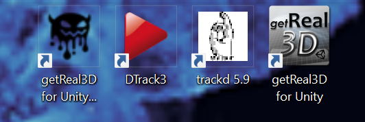{kind=link}
(1) Start getReal3D for Unity daemon
We’ll start by running the getReal3D daemon, which is the first application in the set from above. Double-click to open it; you should see a window open and then close, as it will minimize itself to run silently in the system tray.
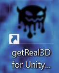{kind=link}
Once you see it running in the tray (as shown below, in the bottom left of the leftmost monitor on the desk), you can move on to the next step!
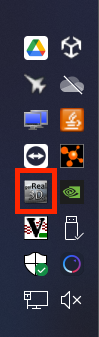{kind=link}
(2) Start DTrack3 and connect controller
Now we need to get the tracking software up and running. To do that, launch the DTrack3 application (the second in our set).
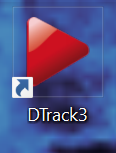{kind=link}
You’ll need to connect to the tracking controller to open the application proper. You should just need to press ‘Connect’; if that button is greyed out check out the troubleshooting guide to fix that..

If the tracking isn’t running (shown by two bodies and the ‘Start’ button replaced with ‘Stop’ as in the second image) you might need to press ‘Start’ at the top of the window so the tracking camera can see within the space.
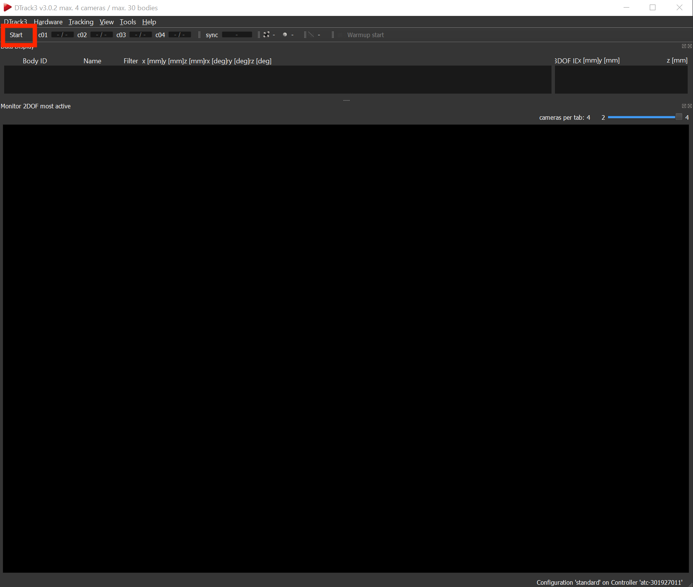{kind=link}

(3) Start trackd middleware
DTrack3 does the actual tracking, but to pass this information along with controller button presses, you need to be running trackd as well and connect the controller to it. Like DTrack3, you can find this on the desktop (the third in our set).
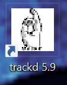{kind=link}
It might prompt you to connect the controller, as shown below: to connect it, just press any of the colored buttons on its front and it should pair automatically.
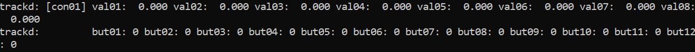{kind=link}
If the controller is connected and DTrack3 is running, dtrack should start printing state for both the glasses and the controller. To verify that controller inputs are coming in properly, press and hold one of the buttons and you should see that information update in dtrack in real time.
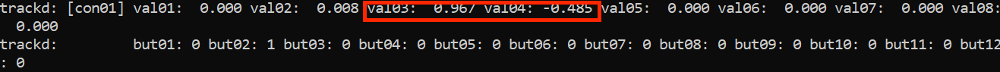{kind=link}
This software can be persnickety sometimes, if you’re pressing controller buttons and it’s not connecting often times closing and reopening it is what it takes!
(4) Start Unity app launcher and run application
The last step is using the getReal3D for Unity launcher to launch your Unity app of choice! This is the fourth and final relevant application on the desktop:
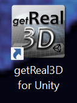{kind=link}
Once it’s open, you should see a list of VizLab applications that you can run. If not, check what tab you’re on at the top. You should be on the ‘Recent Games List’ tab, all others are irrelevant.
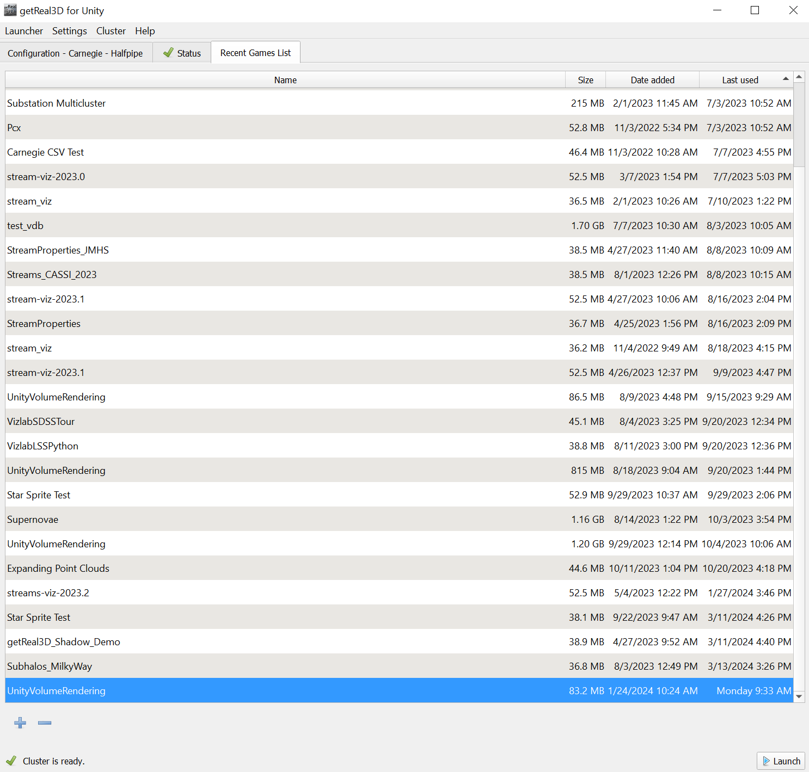 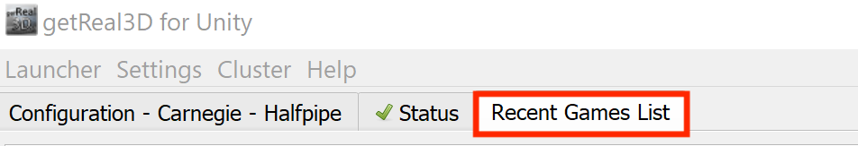{kind=link}
{kind=link}
Select an app by clicking on its name in the list. When you’re ready to run it, just press launch at the bottom right. It will only work if you’ve followed all the instructions though, so look out for these errors and warnings in the bottom left:
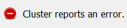{kind=link}
Check that the daemon is running if you’re getting this error!
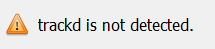{kind=link}
Make sure you’re running trackd if you see this!
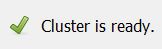{kind=link}
This means you’re (probably) all good to go! Note that the launcher doesn’t throw an error or warning if DTrack3 isn’t running, so if the application starts and the tracking isn’t working, start there!
Now that you’ve set up the VizLab, you’re ready to run software! Running ‘vizlab-core’ in the launcher will start up our main visualization package. For a full list of available software, check out the software index.
Once you’re done with your VizLab software of choice, you can use the launcher to stop it from running and taking up the main display.
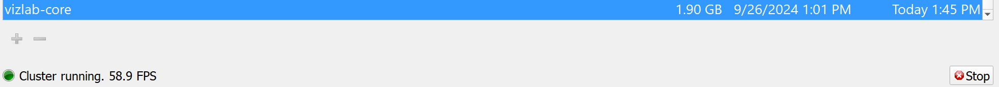{kind=link}